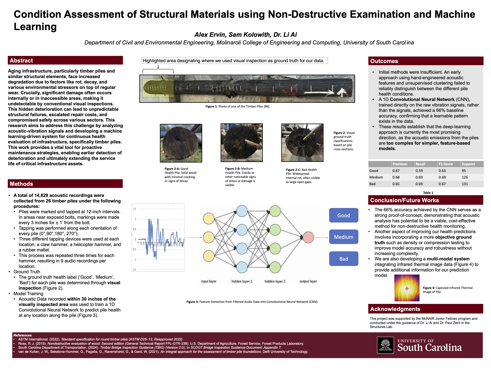

In an age where technology gets integrated into more facets of our society, the risk of technology causing harm or damage increases greatly. I have always enjoyed technology and the benefits it has given to a plethora of different fields of science and development. However, this can come at a cost. Graduating high school not only marked a shift in my own personal learning experience, but it also marked on the timeline a point of no return, where AI became common use for both students and instructors in learning experiences. The benefits of these models have been well recorded, with increased efficiency in scientific breakthroughs and removal of infuriating busy work in offices. However, it is increasingly common for people to utilize Artificial Intelligence in ways that can cause immense damage through misinformation, miscalculations, and lack of human agency. Furthermore, as the technology continues to evolve and improve, so too does the importance of implementing these systems in ways that are responsible, ethical, and trustworthy.
My initial interest in AI started as fascination. I was amazed that AI chatbots like ChatGPT, Gemini, or Claude could give such accurate or intricate responses to questions I would ask. It often seemed as though the responses came out of thin air. This is not as farfetched an explanation as one might think. The intricate and complex calculations behind these LLMs do have meaning and purpose, but much of it remains uninterpretable or foggy to its human observers. It is as if the model told an explanation to you in a language you didn’t or couldn’t understand. Although just a singular example, it goes to show the possible issues that come with large scale uses of models.
Because of my interest in wanting to understand how these models worked and their ethical implications, I enrolled in Statistical Methods II (STAT516) as well as Professional Issues in Computer Science and Engineering (CSCE390). STAT516 covered introductory methods in statistical modeling, machine learning and hypothesis testing for models. I learned that despite modern methods of “Deep Learning” utilized by modern AI methods, they lacked the ability to interpreted or understanding that simpler models possessed. Despite a Neural Network’s ability to quickly and easily understand the relationship between data, it couldn’t show how it came to the correct answer. Furthermore, complications within training data of these models introduce further errors and potential issues. It has been studied that minority groups underrepresented in training data regularly face discrimination or bias within models. In domains such as insurance or government services, this could mean the difference between getting approved for a loan or a higher rate for insurance just off one’s race or sex. This reinforces the need to have interpretable and explainable methods as a requirement rather than a suggestion.
Additionally, much of what was taught in CSCE390 directly correlates with much of the ethical and social issues present with AI. As seen in artifact #1, the Associate for Computing Machinery (ACM) Code of Ethics contains many rules and expectation for entities wishing to implement ethical practices in the context of computing. Specifically, principle 1.3 cover topics of honesty and transparency in the context of system capabilities. Principle 1.4 tackles specificity in tolerance, discrimination, and achieving fairness for all users. Despite the ethical issues I discussed being mainly seen in the context of LLMs (Large Language Models) utilized in AI Chatbots, other methods and contexts are not free from the issues. For example, my time as a research assistant as well as my time as a McNAIR Junior Fellow, much of my time has spent developing solutions or guidelines to prevent such ethical issues.
My general research topic followed predicting the internal health of timber piles. These types of piles were commonly utilized in infrastructure such as bridges in rural areas where timber was an economic, readily available resource. However, as these piles receive frequent traffic, and sustain environmental damage and natural deterioration over time, it remains a critical issue of determining if any given pile is still safe for use. Much of the efforts utilized in this research involved Machine Learning and AI implementation for prediction of the internal health of these models. As seen in artifact #2, my poster for the UofSC Summer Symposium culminated my summer efforts of this research problem. One issues that arouse in this project revolved around the meaning of the prediction and potential questions we might ask. Such questions could as follows: “What is the importance of a false positive categorization?”. If a pile’s health was poor and the model classified it as healthy, would that be a larger problem than if a pile’s health was healthy and was classified as poor? These dilemmas needed to be addressed before further insights could be drawn.
More recently, I enrolled in Trusted Artificial Intelligence (CSCE581), a class specializing in the trust issues encountered in artificial intelligence. It helped me distinguish and contextualize these issues into more manageable pieces. Despite efforts being made, Trustworthiness, Ethics, and Responsibility often take a back seat in favor of technological advancements. However, it remains the responsibility of researchers and users of this technology to uphold ethical principles and guidelines.
Supporting Evidence
ACM Code of Ethics - CSCE 390
The Association for Computing Machinery Code of Ethics, studied in CSCE 390 (Professional Issues in Computer Science and Engineering). Principles 1.3 and 1.4 address transparency, honesty, and fairness in computing systems.

UofSC Summer Symposium Research Poster
A research poster presented at the UofSC Summer Symposium, summarizing my work as a research and McNair Junior Fellow on predicting the internal health of timber piles using machine learning. The project raised key questions about false positives, interpretability, and responsible model deployment in a safety-critical context.